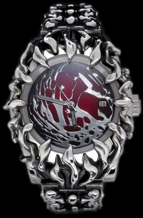

Este reloj de alabastro es una pieza exclusiva que combina belleza y durabilidad. El alabastro es un material renovable, ligero y único que transmite la luz de una manera especial. Con cuidados adecuados, este reloj puede durar muchos años, lo que lo convierte en una inversión sólida y sostenible. ¡No te pierdas la oportunidad de tener un reloj exclusivo hecho de uno de los materiales más hermosos del mundo!